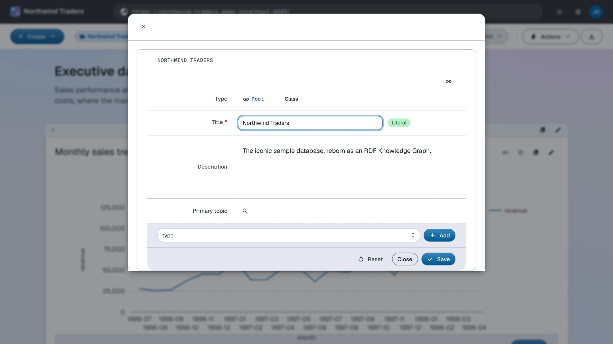
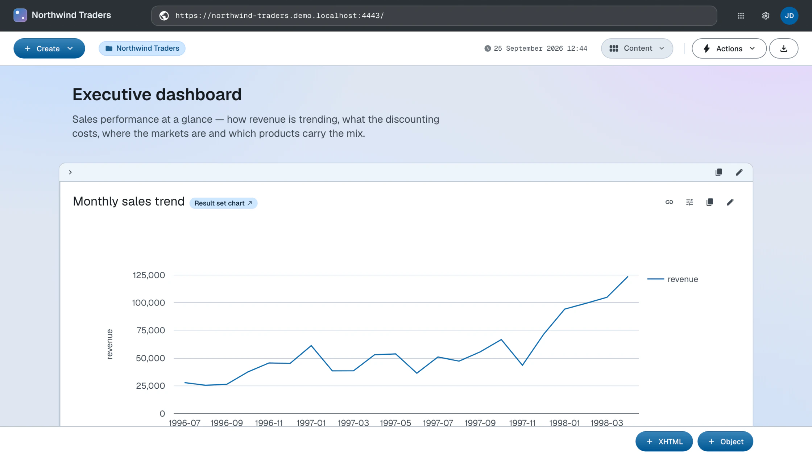

Hello dataspace
Give your app an identity: a title, a description and a landing page
In LinkedDataHub everything is a document, and every document is a named graph whose name is the document's URL. Your dataspace starts with a single document: the root document at the base URI. It doubles as the app's homepage, so making the app yours starts with describing this one document.
In this stage you give the root document a title, a description and a first content block — and see the result render as your homepage.
Open the base URL (e.g. https://localhost:4443/) and authenticate with the owner's WebID certificate. Choose Edit in the action bar's Actions dropdown to open the document edit form, change the title to Northwind Traders, fill in the description, and save. Then, in the Content layout mode, add an XHTML content block with a short welcome text using the XHTML button at the bottom of the page. The Edit content guide walks through the block editor in detail.

The same change, expressed as data. Describe the root document in a root.ttl file:
@prefix def: <https://w3id.org/atomgraph/linkeddatahub/default#> .
@prefix ldh: <https://w3id.org/atomgraph/linkeddatahub#> .
@prefix rdf: <http://www.w3.org/1999/02/22-rdf-syntax-ns#> .
@prefix dct: <http://purl.org/dc/terms/> .
<> a def:Root ;
dct:title "Northwind Traders" ;
dct:description "Knowledge Graph representation of the Northwind Traders sample database" ;
rdf:_1 <#overview-intro> .
<#overview-intro> a ldh:XHTML ;
rdf:value '''<div xmlns="http://www.w3.org/1999/xhtml">
<div class="ldh-section">
<h2>Northwind Traders</h2>
<p>The iconic sample database, reborn as an RDF Knowledge Graph.</p>
</div>
</div>'''^^rdf:XMLLiteral .
Source (finished form): root.ttl · Live: the homepage
PUT the file to the base URI to replace the root document's description. ldh put resolves the relative URIs in the file against the document URL, so the same
file installs against any base URI:
ldh put "$LDH_BASE" root.ttl
This is the seed: by the Composition stage the same document grows into the demo's full executive dashboard, block by block.
What you now see
Reload the base URL: the homepage now carries your title and welcome text. You have not touched a template, a controller or a database schema — you replaced the description of one document, and the UI is a rendering of that description.

How this works
- Documents — the document hierarchy and how documents map to named graphs
- Content blocks — how
rdf:_1,rdf:_2, … sequence a document's content - HTTP API — the
PUTsemantics behind ldh put
Next: Structure